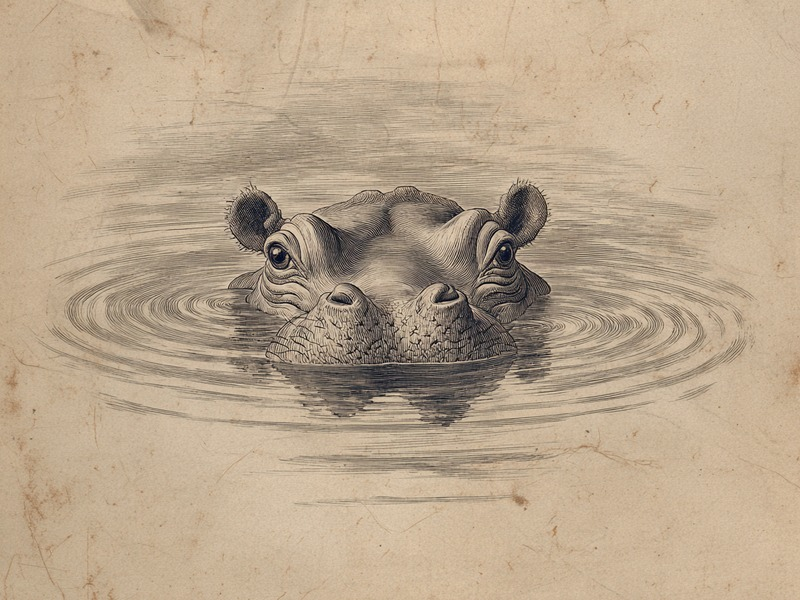

水中生活のプロのはずのカバは、実は泳げないどころか浮くこともできません。体の密度が高すぎて沈んでしまう、ちょっとざんねんな動物なのです。 Hippos may look like masters of the water, but they actually can't swim or even float—their bodies are simply too dense, which is a bit of a shame.
カバは水中生活に適応した体を持ちながら、体の密度が高すぎて浮力が得られず、泳ぐことも浮くこともできません。水中では川底を蹴ったり歩いたりして移動しています。
🔍 ちょっと寄り道:動物の行動には理由があるように、人の性格にも傾向があります。気になった方は性格診断(MBTI)も覗いてみてください。
水のプロなのに、泳げない?
目・耳・鼻の配置や5分ほどの潜水など水中生活に適応した体を持ちながら、カバは泳げず、浮くことすらできません。目・耳・鼻はすべて頭のてっぺん近くに並んでいて、体をほとんど水に沈めたまま、周りを見たり、音を聞いたり、息をしたりできるつくりです。さらに潜るときには耳と鼻をぴたりと閉じることができ、5分ほどの潜水もこなします。ここまで聞くと「さぞかし泳ぎが得意なんだろう」と思いますよね。ところが泳げないどころか、浮くことすらできないのです。あれだけ水に特化した体を持ちながら、肝心の「泳ぐ」ができないというのは、なんともざんねんな話です。
出典: San Diego Zoo「Hippopotamus」animals.sandiegozoo.org
浮けないなら、川底を歩く
体の密度が高すぎて浮力が得られないため、カバは水中では泳がず、川底を足で蹴ったりつま先をつけたりして歩いて移動しています。密度が高いと水から十分な浮力が得られず、体は自然と川底へ沈んでいきます。そこで川底を足で蹴って進んだり、つま先を軽く川底につけながら、スローモーションのギャロップのようにゆっくり駆けたりしているわけです。水中をすいすい泳いでいるように見えて、実は水の底をてくてく歩いているだけ。ざんねんではありますが、あの体でスローモーションの駆け足をする姿を想像すると、ちょっと愛らしくも思えてきます。
目・耳・鼻を水面ぎりぎりに並べ、5分もの潜水までこなす徹底ぶりなのに、肝心の「泳ぐ」だけができない。この見た目と実態のギャップこそが、カバのざんねんポイントと言えそうです。